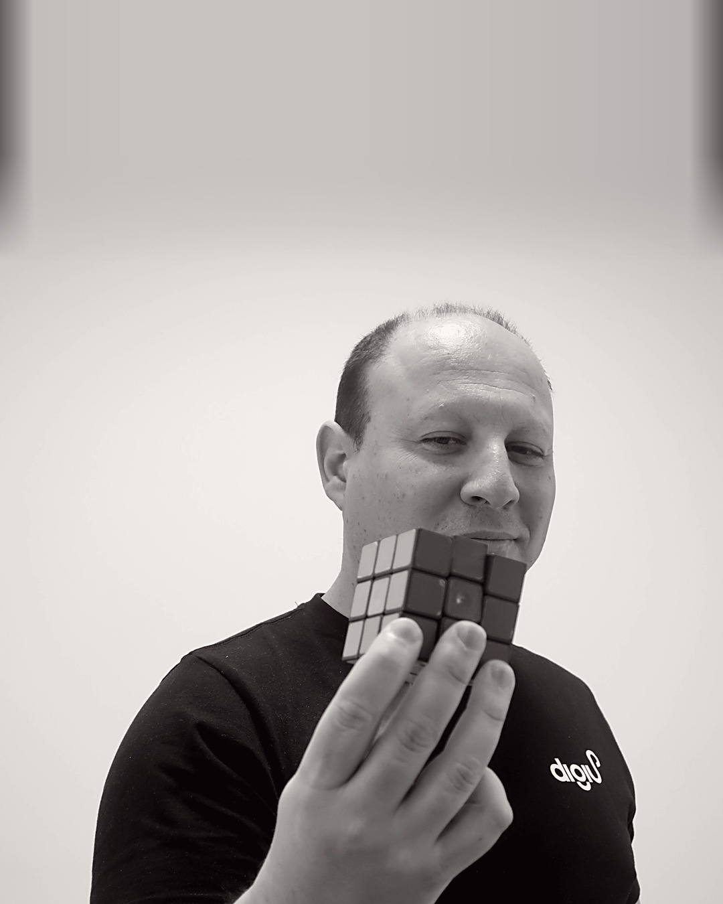
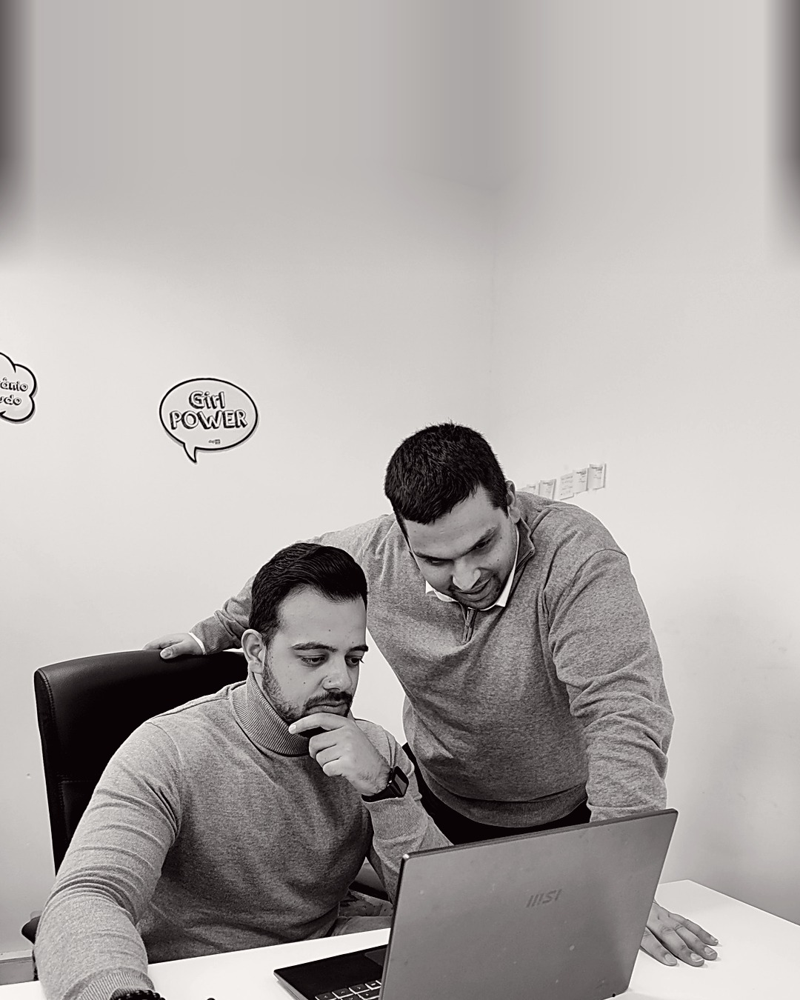

 O desafio primeiro
O desafio primeiroTodo o
desafio tem
solução.
desafio tem
solução.
Às vezes, é preciso rodá-lo algumas vezes. Fale-nos do seu.

O desafio primeiroÀs vezes, é preciso rodá-lo algumas vezes. Fale-nos do seu.

Como trabalhamosPrimeiro percebemos o seu negócio. Depois escolhemos a abordagem certa.